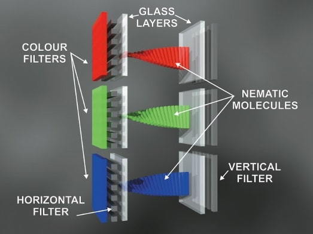
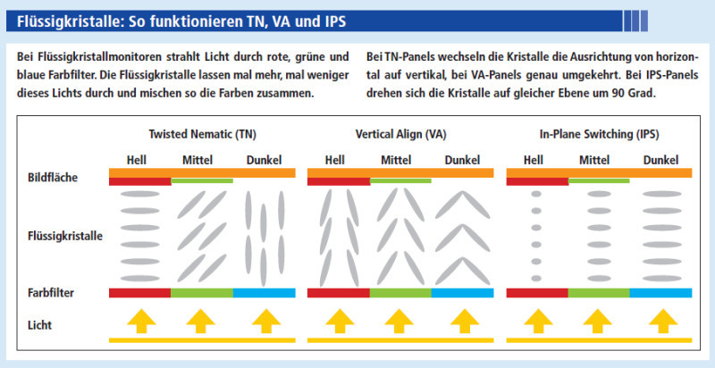
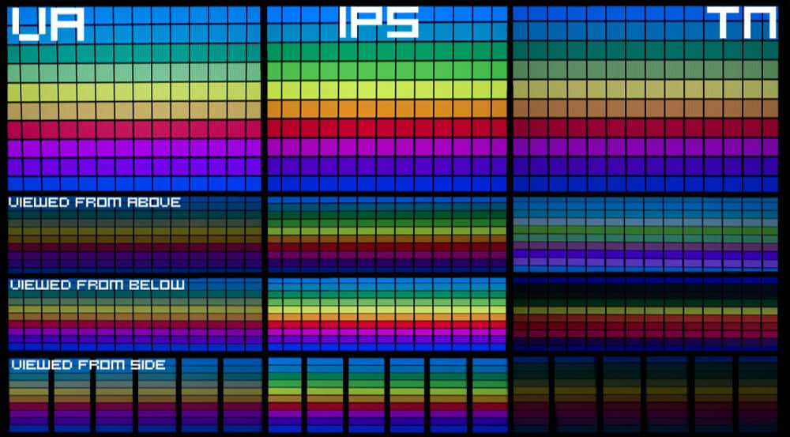

Licht trifft auf ersten Polarisationsfilter, filtert alles ausser vertikale Lichtwellen heraus
Einheitlich polarisiertes Licht gelangt weiter durch die erste transparente Elektrode in die Flüssigkristallschicht
Gebogene Flüssigkristalle drehen vertikale Lichtwellen um 90°
Die nun horizontalen Lichtwellen gelangen durch zweite transparente Elektrode
Gelangen durch den zweiten horizontalen Polarisationsfilter
Als Letztes gelangen sie durch einen Farbfilter, um dem Subpixel seine Farbe zu verleihen


LCD
LCD steht für Liquid Crystal Display
Verbaut in allerlei Anzeigen (Uhren, Hausgeräten, Druckern, Monitore, Fernseher)
Das Licht der Hintergrundbeleuchtung passiert einen Polarisationsfilter, wodurch einheitlich polarisiertes Licht weiter gelangt. Dieses polarisierte Licht gelangt weiter durch eine Flüssigkristall-Schicht, welche durch zwei Elektroden-Schichten gesteuert wird. Danach tritt das Licht durch einen weiteren Polarisationsfilter und einen Farbfilter aus.
TN
Twisted Nematic
Größter Marktanteil
Schnelle Reaktionszeiten
Geringer Stromverbrauch
Schlechte Blickwinkel
Nematische Zellen befinden sich im stromlosen Zustand vertikal zu den Polarisationsfiltern. Je horizontaler die Zellen ausgerichtet werden, desto heller wird das Display
VA
Vertical Alignment
Guter Kontrast
Gute Blickwinkel
Schlechte Reaktionszeiten
Hoher Stromverbrauch
Die Flüssigkristalle befinden sich im stromlosen Zustand horizontal zu den Polarisationsfiltern. Je vertikaler die Kristalle ausgerichtet werden, desto heller wird das Display
IPS
In Plane Switching
Sehr gute Blickwinkel
Gute Farbtreue
Hoher Stromverbrauch
Die Flüssigkristalle drehen sich nur auf der horizontalen Achse zum Polarisationsfilter. Je nach Orientierung blockieren sie das polarisierte Licht
Vergleich

OLED
Organic Light Emitting Diode
OLED Display besteht aus grundlegend aus 4 Schichten
Sobald Spannung anliegt, werden Elektronen aus der Kathode in die Emitterschicht/Organische Schicht injiziert
Aus der Anode werden mithilfe einer Lochleitungsschicht positiv geladene Löcher in die Emitterschicht injiziert
In der Emitterschicht verbinden sich Elektron und Loch, unter Emittierung von Photonen
Gutes Schwarz
Geringer Energieverbrauch, da Pixel in dunkleren Szenen abgeschaltet werden können bzw. weniger Energie verbrauchen